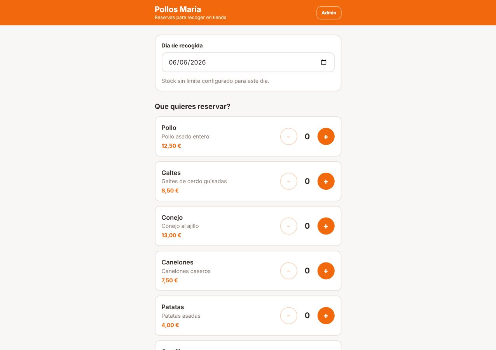
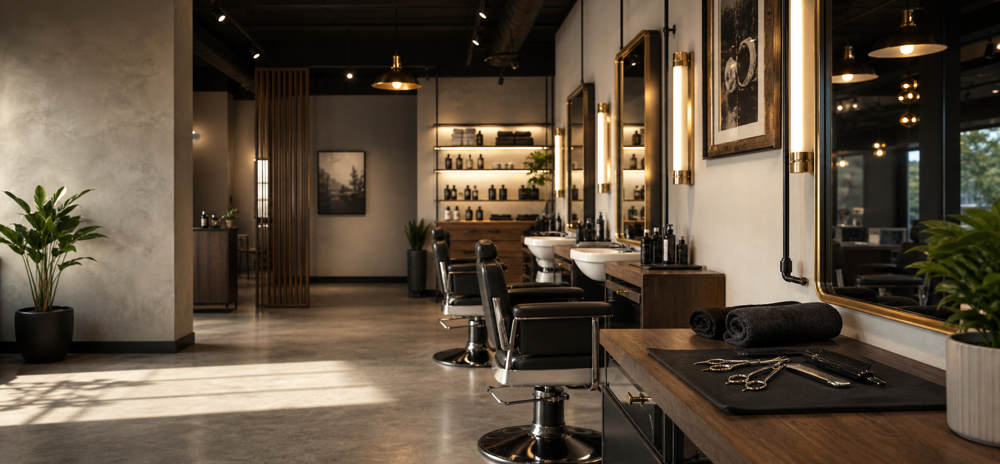
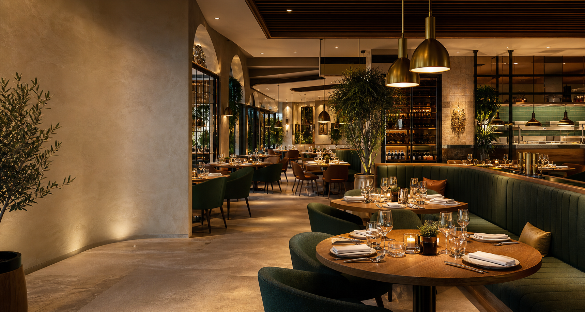

Arquitectura, textos y llamadas a la accion para que el visitante entienda rapido que ofrece el negocio.

Consultoria y desarrollo web para empresas
Proyectos web que convierten problemas de negocio en sistemas claros.
Creo webs claras y funcionales para que negocios reales puedan vender, reservar o contactar mejor desde el primer momento.
4 webs finalizadas
4 sectores distintos
100% enfoque negocio
Perfil
Perfil tecnico en desarrollo web, IA y soluciones digitales.
Soy Denis Noguera. Llevo una trayectoria de 6 años formandome en informatica y actualmente sigo en activo con Ingenieria Informatica, combinando base tecnica, desarrollo web y conocimientos de inteligencia artificial aplicados a soluciones reales.
Mi enfoque no es hacer solo paginas bonitas: trabajo cada web como una herramienta para captar clientes, ordenar reservas, presentar servicios y transmitir una imagen mas seria desde el primer contacto.
Flujos claros para que el cliente pueda pedir, reservar o contactar sin perderse.
Diseño responsive y consistente para que el negocio parezca cuidado, serio y facil de entender.
Proyectos web
Proyectos reales para negocios que necesitaban presencia digital clara.
Cada proyecto esta construido alrededor de una necesidad concreta: vender mejor, recibir reservas, presentar servicios o facilitar el primer contacto con el cliente.
Pedidos online
Restauracion

Pollos Maria
Web de pedidos online para un negocio de comida preparada, pensada para mostrar productos, facilitar la eleccion del cliente y dar una experiencia de compra directa.
- Carta digital clara y orientada a pedido
- Experiencia responsive para movil
- Flujo pensado para reducir llamadas y dudas
Marca y reservas
Tattoo studio

Tattoo Style Mollet
Sitio web para estudio de tatuajes, enfocado en presentar el estilo del negocio, generar confianza visual y dirigir al cliente hacia el contacto o la reserva.
- Identidad visual fuerte y profesional
- Presentacion de servicios y trabajos
- Contacto rapido para potenciales clientes
Reservas
Peluqueria canina

Peluqueria Canina Enea
Web para peluqueria canina con servicios, galeria, opiniones y un flujo de reserva para que el cliente pueda elegir servicio, dia, hora y dejar sus datos.
- Reserva guiada paso a paso
- Galeria y prueba social
- Informacion clara de servicios y contacto
Carta digital
Restauracion

Tapas Kebab
Web para restaurante con presentacion de oferta, navegacion sencilla y enfoque en que el cliente encuentre rapido que pedir o como contactar.
- Presentacion clara del negocio
- Experiencia sencilla para movil
- Orientacion a pedido y contacto
Bases que pueden interesar
Bases profesionales listas para adaptar a negocios similares.
Ademas de proyectos cerrados, tambien preparo bases completas que sirven como punto de partida para lanzar una web con reservas, panel interno y una imagen cuidada en menos tiempo.

Base con reservas
Peluquerias
Base web peluqueria
Plantilla profesional para peluquerias y barberias con equipo, servicios, reserva online, bloqueo de horarios y panel admin para recepcion.
Ver base
Base con reservas
Restaurantes
Base web restaurante
Base visual para restaurantes con zonas reservables, mesa mas temprana disponible, panel de recepcion y estructura preparada para conectar base de datos.
Ver baseServicios
Construccion web con criterio de negocio y base tecnica.
Web corporativa profesional
Paginas serias para explicar la empresa, sus servicios y sus diferenciales con autoridad.
Landing de captacion
Estructura enfocada en convertir visitas en llamadas, formularios, reservas o presupuestos.
Reservas, pedidos y flujos
Soluciones para que el cliente pueda pedir, reservar o dejar sus datos de forma sencilla.
Mejora de webs existentes
Auditoria visual, tecnica y comercial para convertir una web floja en una herramienta fiable.
Metodo
Un proceso ordenado para que el proyecto avance con control.
-
1
Diagnostico
Definimos el problema, el publico, los objetivos y que debe hacer la web para aportar valor real.
-
2
Estructura
Ordeno secciones, mensajes, llamadas a la accion y flujos antes de entrar al diseño final.
-
3
Construccion
Desarrollo una web responsive, rapida y limpia, con especial cuidado en la experiencia real.
-
4
Entrega y mejora
Reviso rendimiento, textos, conversion y dejo una base preparada para futuras iteraciones.
Empezamos con una conversacion
Cuentame que problema quieres resolver con tu web.
En una primera revision puedo ayudarte a detectar que esta frenando tu presencia digital, que necesita tu negocio y que tipo de web tendria mas impacto.